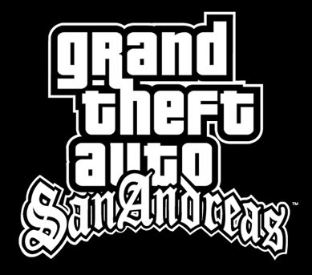
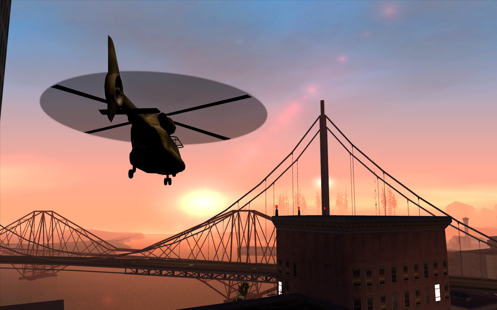

جراند ثفت أوتو: سان أندرياس هي لعبة مغامرات وحركة تم تطويرها بواسطة روكستار نورث ونشرتها روكستار جيمز. تم إصدارها في عام 2004 لجهاز بلاي ستيشن 2، ولاحقًا لأجهزة مايكروسوفت ويندوز وإكس بوكس. تدور أحداث اللعبة في ولاية سان أندرياس الخيالية، التي تستند بشكل كبير إلى كاليفورنيا ونيفادا.
تتبع اللعبة قصة كارل "CJ" جونسون، الذي يعود إلى لوس سانتوس من مدينة الحرية بعد مقتل والدته. يجد CJ أصدقائه وعائلته القدامى في حالة فوضى، وخلال اللعبة، يحاول إعادة تأسيس عصابته القديمة، ويصطدم بالشرطة الفاسدة، ويكشف تدريجيًا الحقيقة وراء مقتل والدته.
تشتهر GTA سان أندرياس بأسلوب اللعب المفتوح، مما يسمح للاعبين بالتجول بحرية في مدن لوس سانتوس وسان فييرو ولاس فينتوراس. تتميز اللعبة بمجموعة متنوعة من المهام والأنشطة الجانبية والألعاب المصغرة، بالإضافة إلى مجموعة واسعة من المركبات والأسلحة.
حققت اللعبة نجاحًا نقديًا وتجاريًا، وأشيد بها لعالمها المفتوح الواسع، وقصتها المثيرة، وآليات اللعب المبتكرة. أصبحت منذ ذلك الحين واحدة من أكثر ألعاب الفيديو مبيعًا على الإطلاق، وتظل كلاسيكية محبوبة بين عشاق السلسلة.